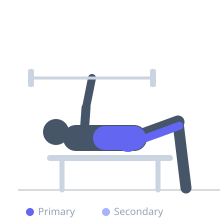
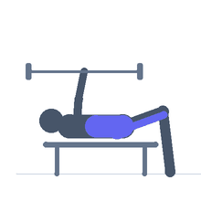

Exercise guide / 45-Degree Back Extension with Barbell
45-Degree Back Extension with Barbell
A weighted hyperextension exercise performed in the 45-degree back extension machine with a barbell held behind the head or at the chest. Adding barbell weight significantly increases the posterior chain loading, developing the glutes, hamstrings, and erector spinae simultaneously.
Primary muscles
gluteus maximus
erector spinae
biceps femoris long head
Secondary muscles
semitendinosus
adductor magnus
Stabilizers
transverse abdominis
Equipment
Lat Pulldown Machine
Standard Barbell
Optional
Weight Plates


Starting position
- Position yourself in the 45-degree hyperextension bench with the pad across the hips. Hold a barbell plate at chest or a barbell behind the neck.
Setup
- Set the hyperextension bench correctly. Load a barbell held at chest height or position a plate at the chest.
Steps
- Step 1: Lower the torso forward into full hip flexion, maintaining a neutral spine.
- Step 2: Drive the hips into the pad and extend the torso upward using glute and hamstring strength.
- Step 3: Extend to a neutral spine position at the top — do not hyperextend the lumbar.
- Step 4: Lower back down under control.
Coaching cues
- Drive through the hips, not the lower back
- Stop when the body is in a straight line
Breathing
- Inhale on the descent. Exhale on the extension.
Range of motion
- Full hip flexion at the bottom. Neutral spine at the top — not hyperextended.
Tempo
- 3-0-2-0
Common mistakes
- Hyperextending the lumbar spine at the top
- Using momentum to swing the torso up
Safety
- Stop the ascent at a neutral spine position, not beyond it
Training
- strength: 3–8 reps
- hypertrophy: 8–15 reps
- strength: 3–5 sets
- hypertrophy: 3–4 sets
- Rest: {'strength': 180, 'hypertrophy': 90}